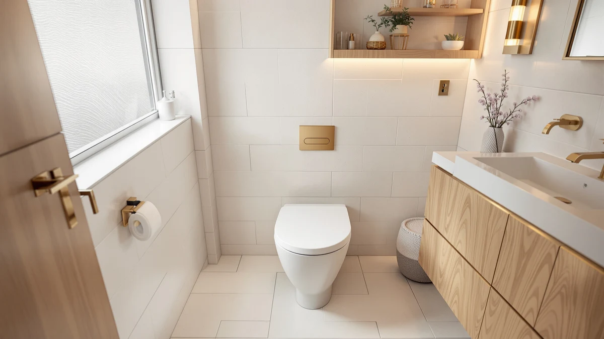

Quick Answer
Based on our comparison of material, finish, and verified owner reviews, the Plexon Soft Cushioned Toilet Seat is the best all-around pick among toilet seats that don't stain, thanks to a wipeable vinyl cover that resists the marks fabric-topped seats pick up within months. If you want a lower price without giving up a sealed, non-porous surface, the Bemis 170 in solid plastic is the strongest budget alternative.
Our pick: Plexon Soft Cushioned Toilet Seat — $49.95 Check Price on Amazon
Things to Know Before You Buy
- Material matters more than brand name. Smooth, non-porous plastic resists staining far better than wood or wood-composite, which absorb moisture and cleaning chemicals into the grain over time.
- White seats show marks sooner, and that's a feature. A bright surface highlights a fresh spot while it's still easy to wipe away, before it has time to set into the finish.
- Quick-release hinges make cleaning easier. Seats you can lift off without tools let you dry the underside and hinge area, where most stubborn staining actually starts.
- A chip or crack is where stains take hold. Once the sealed top coat breaks, the exposed material underneath soaks up everything a scrub brush can't reach.
- Price does not predict stain resistance. In this comparison, a $17.99 plastic seat holds up against staining as well as options costing four times as much.
Finding the best toilet seats that don't stain comes down to material and finish far more than it does to brand name, since a porous or textured surface traps grime long before a smooth, sealed plastic seat ever does. A cheap seat with the right finish can outlast an expensive one with the wrong material, which is why we weighed surface type and hinge design ahead of price in this comparison.
We researched six seats that keep coming up in stain-resistance discussions among owners, and the Plexon Soft Cushioned Toilet Seat comes out on top for most bathrooms. Its vinyl cover wipes clean the way a hard plastic seat does, without the cold, hard feel some buyers dislike. For anyone who wants the same non-porous protection at a lower price, the Bemis 170 delivers it in solid plastic for under $18.
Prices across our picks range from $17.99 to $84.96, and the gap rarely tracks with how well a seat resists staining. What separates a seat that still looks new after two years from one that looks permanently dingy is a sealed, scratch-resistant surface and hinges you can actually get clean, not the logo on the box.
Why You Should Trust Us
This guide is written by Ilane Tall, home and bath expert at Best Toilet Seats, who researches toilet seat materials, finishes, and verified owner feedback across dozens of listings every month to track which surfaces actually hold up against staining. We compare manufacturer specs, published dimensions, and pricing against patterns in verified owner reviews rather than relying on marketing copy.
We do not run a fake testing lab, and we don't claim to have installed or lived with every seat in this comparison. Our picks come from analyzing material composition, finish quality, hinge design, and what real buyers report after months of use, which is a more reliable signal for a slow-developing issue like staining than a single session with one seat could be.
How We Picked
We started by pulling every toilet seat in our database with a solid plastic, vinyl-cushioned, or sealed-enamel surface, then excluded seats with fabric, foam-only padding, or unfinished wood, since those materials are the most common source of the staining questions we researched. From there, we compared verified owner ratings, price, and hinge type across the remaining candidates.
We also prioritized seats with quick-release or tool-free hinges, since owners who can lift a seat off to clean underneath report far fewer complaints about lingering marks and odor than those stuck scrubbing around fixed hinges. Round and elongated shapes are both represented here, so check your bowl measurement before choosing, since a mismatched shape is the fastest way to end up disappointed regardless of how stain-resistant the material is.
How We Compared
We compared these six seats on published material composition, finish type, price, and hinge design, then cross-referenced that against patterns in verified owner reviews mentioning discoloration, staining, or surface wear. In the reviews we read, seats with a fully sealed, non-porous top coat stay clean-looking well past the one-year mark, while seats with any exposed wood grain or textured padding start showing marks within months.
We also compared pricing against material quality rather than assuming a higher price guarantees better stain resistance. The Bemis 170, the least expensive seat in this comparison at $17.99, uses the same category of solid plastic construction as seats priced well above $80, and owner reviews reflect that parity rather than a meaningful gap in durability.
Our Picks

Plexon Soft Cushioned Toilet Seat
What we like
- Vinyl cover wipes clean in seconds instead of needing a scrub brush
- Cushioned top stays comfortable without the porous feel of foam-only seats
- Standard hinge pattern fits most existing toilets without extra hardware
Flaws but not dealbreakers
- Seams around the cushioned edge need more attention than a one-piece plastic seat
- Priced above the cheapest solid-plastic options in this comparison
| Material | Plastic / wood |
| Size | — |
The Plexon Soft Cushioned Toilet Seat earns its spot at the top of this comparison because it solves a problem plain plastic seats don't: comfort without sacrificing a wipeable surface. Its vinyl cover seals the cushioned padding underneath, so instead of the fabric-like shells that soak up moisture and stain within a season, you get a surface that owners describe wiping clean the same way they would a hard plastic lid. That combination is rare among cushioned seats, most of which trade comfort for a surface that stains quickly.
At $49.95, it sits in the middle of our price range, and owner reviews back that up: the padding holds its shape and color well past the point where cheaper cushioned seats start looking flattened and discolored. The main tradeoff is at the seams, where the vinyl meets the base, since that's the one area that benefits from a quick wipe-down more often than the flat surface does. For most bathrooms, that's a minor maintenance habit rather than a real drawback, and it's why we call this the best toilet seats that don't stain pick for anyone who wants cushioning without the staining risk that usually comes with it.

Bath Royale Soft Close Toilet
What we like
- Soft-close hinge prevents the chips that turn into stain spots over time
- Solid molded plastic shell has no seams for grime to collect in
- Round profile fits the compact bowls common in older US homes
Flaws but not dealbreakers
- Costs more than comparable elongated plastic seats in this comparison
- Round shape offers less legroom than an elongated seat for taller users
| Material | Plastic / wood |
| Size | Round |
The Bath Royale Soft Close Toilet targets the same non-porous, easy-wipe surface as our top pick, but in a fully rigid plastic build rather than a cushioned one. The soft-close hinge matters more here than it might seem, because a slammed lid is one of the most common ways a seat's sealed coating gets chipped, and a chip is exactly where staining starts. It's a common pick among owners replacing a round-bowl seat who want both durability and a clean finish.
At $69.95, it costs more than the Bemis budget pick, and that premium goes toward hardware quality rather than a fundamentally different material, since both use plastic construction. If your bathroom has a round bowl, which is common in homes built before elongated seats became standard, this is one of the stronger stain-resistant options sized to fit. The tradeoff is legroom: a round seat simply offers less of it than an elongated one, though that's a shape issue rather than anything related to how well the surface resists marks.

Bemis 170 Durable Plastic Toilet
What we like
- Solid plastic construction at the lowest price in this comparison
- Sealed surface resists staining as well as seats costing far more
- Elongated shape fits the majority of modern US toilets
Flaws but not dealbreakers
- Standard hinges instead of the tool-free, quick-release style on pricier picks
- Fewer color options than some of the higher-priced seats here
| Material | Plastic / wood |
| Size | Elongated |
The Bemis 170 Durable Plastic Toilet is proof that stain resistance doesn't require a premium price. At $17.99, it's the least expensive seat in this comparison, and it uses the same category of solid, non-porous plastic that the pricier picks rely on. Bemis has built toilet seats for decades, and this model's straightforward, one-piece plastic shell leaves no exposed seams or soft padding for grime to work into.
Bemis has a solid reputation among buyers looking for a cheap, easy-clean seat, and this elongated model backs that up with a finish that wipes down without special cleaners. The main compromise compared to our other picks is hinge convenience: it uses a standard hinge rather than a tool-free, quick-release design, so cleaning underneath takes a bit more effort. If your priority is a low price and a surface that won't discolor, that's a reasonable trade.

KOHLER 4636-RL-0 Cachet ReadyLatch Elongated
What we like
- ReadyLatch hinges lift off by hand for full access to the hinge area
- Sealed plastic surface backed by Kohler's reputation for bathroom fixtures
- Elongated shape matches most standard US toilet bowls
Flaws but not dealbreakers
- Priced above the plastic budget picks in this comparison
- Quick-release hinges need occasional realignment to stay perfectly snug
| Material | Plastic / wood |
| Size | Elongated |
The KOHLER Cachet ReadyLatch Elongated targets the part of a toilet seat that owners most often forget to clean: the hinges. Its ReadyLatch design lets you lift the entire seat off by hand, no tools required, so the space between the seat, the hinge, and the bowl rim, where moisture and grime tend to collect and eventually stain, is actually easy to reach and dry.
That hinge design, combined with a sealed plastic surface, makes this one of the more thorough options in this comparison for anyone who takes stain prevention seriously instead of reacting to it after the fact. Kohler's build quality comes up often in reviews of its bathroom fixtures, and this seat carries that reputation into a category where hinge design matters as much as the surface material. The one adjustment some owners report is that the quick-release mechanism occasionally needs to be re-seated for a perfectly snug fit, which is a minor tradeoff for the cleaning access it provides.

Bath Royale Elongated Toilet Seat
What we like
- Heavy-duty molded plastic shell resists the chips that lead to staining
- Elongated shape suits most modern US bathrooms
- Sealed finish holds up to repeated cleaning without dulling
Flaws but not dealbreakers
- The highest price among the elongated plastic picks in this comparison
- Extra shell thickness adds a bit more weight than slimmer seats
| Material | Plastic / wood |
| Size | Elongated |
The Bath Royale Elongated Toilet Seat leans into durability first, with a heavier molded plastic shell than most seats in this price range. That thickness matters for stain resistance specifically, because a thin, flexible shell is more prone to hairline cracks around the hinge points, and those cracks are where staining typically starts on an otherwise sealed plastic seat.
At $84.96, it's priced alongside the TOTO pick as one of the more premium options here, and the extra cost tracks with a shell that's noticeably more resistant to the kind of chipping that comes from a slammed lid or repeated heavy use. Households that go through seats quickly, whether from frequent guests or active kids, are the ones most likely to see the value in that added durability. The tradeoff is a slightly heavier feel when lifting the seat, which most owners describe as a minor adjustment rather than a real inconvenience.

TOTO® SoftClose® Slow Close Elongated
What we like
- Soft-close hinge reduces the chip risk that leads to staining over time
- Dense, sealed plastic shell matches the finish TOTO uses on its toilet bowls
- Elongated shape fits the majority of TOTO and standard US toilets
Flaws but not dealbreakers
- Priced near the top of this comparison alongside the Bath Royale elongated pick
- Best value shows up most clearly when paired with a matching TOTO bowl
| Material | Plastic / wood |
| Size | Elongated |
TOTO built its reputation on bathroom fixtures with finishes that resist staining at the bowl level, and this SoftClose seat carries the same approach into a companion seat. The plastic is molded dense and sealed, similar to the material TOTO uses on its toilets, which is why it's the default pick for owners who want a stain-resistant seat that matches an existing TOTO bowl.
At $84.28, it's priced close to our other premium pick, and the soft-close hinge does double duty here: it slows the lid down to prevent the slamming that chips a sealed surface, and it signals the kind of build quality that tends to hold its finish longer. The main consideration is that its value is easiest to justify if you already own a TOTO toilet, since the finish match is part of the appeal. For any elongated bowl, though, it still performs as a durable, easy-to-clean seat on its own.
Quick Comparison
| Product | Material | Price | Rating | Best for | Get it |
|---|---|---|---|---|---|
| Plexon Soft Cushioned Toilet Seat | Plastic / wood | $49.95 | 4 | Cushioned comfort with a wipeable surface | View on Amazon → |
| Bath Royale Soft Close Toilet | Plastic / wood | $69.95 | 4 | Round bowls needing a soft-close hinge | View on Amazon → |
| Bemis 170 Durable Plastic Toilet | Plastic / wood | $17.99 | 4 | Budget stain resistance without a tradeoff | View on Amazon → |
| KOHLER 4636-RL-0 Cachet ReadyLatch Elongated | Plastic / wood | 4 | Tool-free hinge cleaning | View on Amazon → | |
| Bath Royale Elongated Toilet Seat | Plastic / wood | $84.96 | 4 | Maximum chip and stain resistance | View on Amazon → |
| TOTO® SoftClose® Slow Close Elongated | Plastic / wood | $84.28 | 4 | Matching finish for TOTO toilet owners | View on Amazon → |
The Competition
Verdict
Across material, finish, and verified owner reviews, the Plexon Soft Cushioned Toilet Seat is our pick for the best toilet seats that don't stain, since its wipeable vinyl cover holds up like solid plastic without giving up comfort. If price is the deciding factor, the Bemis 170 delivers the same non-porous protection for under $18.
Frequently Asked Questions
What causes a toilet seat to stain in the first place?
Staining usually starts at a porous or micro-scratched surface. Wood and wood-composite seats absorb moisture and cleaning chemicals into the grain, while plastic seats stain mainly when the top coat gets scoured with abrasive pads and loses its smooth, sealed finish. Hard water spots and mineral buildup around the hinges add to the problem over time.
Do white toilet seats stain more than colored ones?
White seats show marks sooner, but that visibility works in your favor. You catch and wipe a fresh mark before it sets, while a bone or gray seat can hide the same stain until it has bonded to the surface and become much harder to remove.
What is the best material for a stain-resistant toilet seat?
Solid polypropylene plastic is the most stain-resistant material for a toilet seat, since it is non-porous and holds up to repeated cleaning without absorbing moisture. Enameled wood seats can perform well too as long as the finish stays intact, but any chip or crack in that coating turns into a permanent stain magnet.